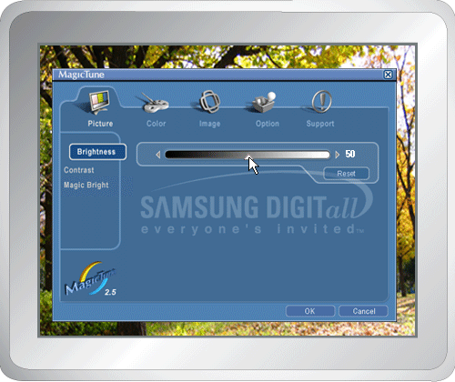
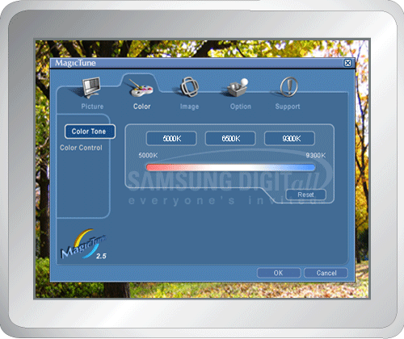
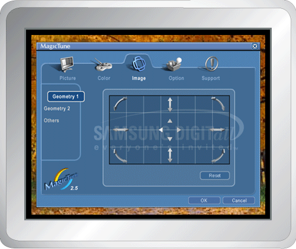
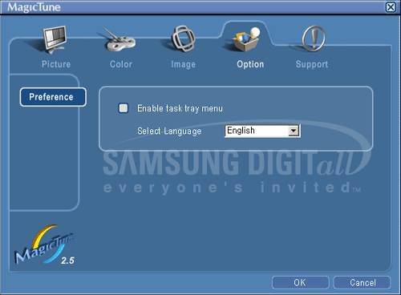
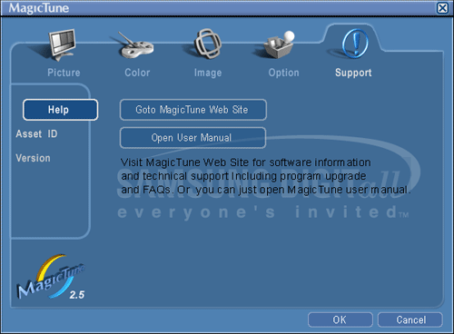

|

|
 |
MagicTune allows for quick accurate tuning of the display with the ability to easily save and use monitor configurations that are best suited for you.
- OSD mode may appear inconsistent with the explanation in guidance book depending on specification of each monitor.
|
|
|

The OSD mode makes the adjustment of settings on all monitors easy.
When selected , each tab on top of the control window displays the general descriptions of the sub-menu items for adjustment.
When selected, each tab displays a list of menus. For quick adjustment of the monitor settings, the OSD mode allows easy and convenient access to all tabs and sub-menu items.
|
OK
|
Applies any changes made and exits MagicTune.
|
|
Reset
|
Restores the monitor values displayed on the active control window to the manufacturer-recommended values .
|
|
Cancel
|
Exits MagicTune without applying the changes made.
If you have not made any changes in the control window, clicking "Cancel" does not cause any actions.
|
 Picture Tab Definition
Allows the user to adjust the screen settings to the desired values. Picture Tab Definition
Allows the user to adjust the screen settings to the desired values.
|
Brightness
|
Makes the entire screen brighter or darker.
The detailed data of the images in the dark areas can be lost if the brightness is not adjusted to the proper level.
Adjust the brightness for best viewing conditions.
|
|
Contrast
|
Adjusts the difference in brightness between the bright and dark areas on screen. Determines the crispness of the images.
|
|
MagicBright™
|
MagicBright™ is a new feature providing the optimum viewing environment depending on the contents of the image you are watching.
Currently four different modes are available.
Each mode has its own pre-configured brightness value. You can easily select one of four settings by simply pressing the MagicBright™ control button.
- Text: For documentations or works involving heavy text.
- Internet: For working with a mixture of images such as text and graphics.
- Game: For watching motion pictures such as a Game.
- Entertain: For watching motion pictures such as a DVD or VCD.
- Text: For documentations or works involving heavy text.
- Internet: For working with a mixture of images such as text and graphics.
- Entertain: For watching motion pictures such as a DVD or VCD.
|

|
Color Tab Definition
Adjusts the "warmth" of the monitor background or image color.

|
Color Tone
|
The tone of the color can be changed.
- Warm - Normal - Cool
- Custom
|
|
Color Control
|
Adjusts of the monitor image color.
You can change the monitor color to your desired color.
|
Image Tab Definition
Adjusts the Position, Size and Rotation values.

|
Geometry 1
|
Adjusts the Position, Size and Rotation values.
|
|
Geometry 2
|
Adjusts the Pincushion, Pinbalance, Trapezoid and Parallelogram values.
- Pincushion
- Pinbalance
- Trapezoid
- Parallelogram
|
|
Other
|
Adjusts the Moire, Degauss, Sidepin Corner, and Pinbalance Corner values.
- Moire
- Degauss
- Sidepin Corner Top
- Sidepin Corner Bottom
- Pinbalance Corner Top
- Pinbalance Corner Bottom
|
Option Tab Definition
You can configure MagicTune using the following options.

|
Preferences
|
Loads the Preferences Dialog Box. Preferences in use will have an "V" in the check box. To turn on or off any Preference, position the cursor over the box and click.
- Enable task tray menu .
-
To access the MagicTune menus, click the icon on the [task tray menu].
The menus are not displayed if the [Enable System Tray] is deselected in [Options] ' [Preferences].
- Select Language - The language chosen affects only the language of the OSD.
|
Support Tab Definition
Shows the Asset ID and the version number of the program, and allows you to use the Help feature.

|
Help
|
Visit the MagicTune website or click to open the Help files (User Manual) if you need any help installing or running
MagicTune.
The User Manual opens within a basic browser window.
|
|
Asset ID
|
Opens a monitor info window showing the manufacturing date of the monitor.
|
|
Version
|
Displays the version number of MagicTune.
|
|

 OSD Mode
OSD Mode